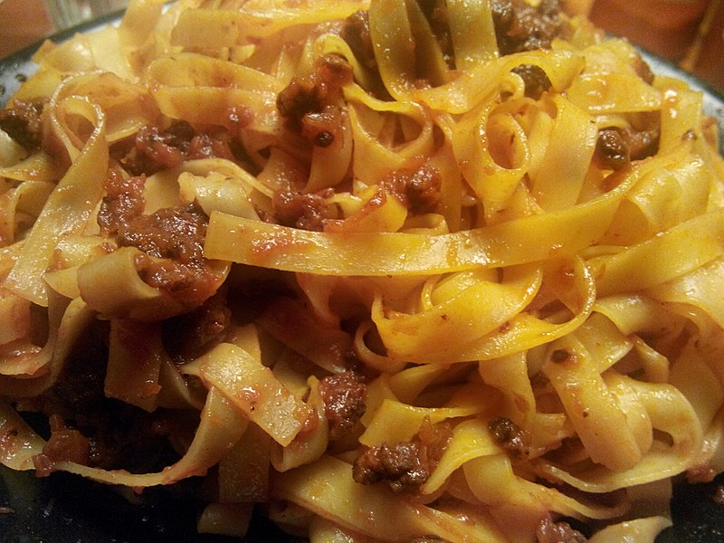

Home
Pasta al Ragù

Description
Also known as Pasta alla Bolognese, it's a very popular Italian first dish.
Typical of the city of Bologna,
this recipe requires minced meat and tomato sauce.
What matters the most is the quality of the beef
and the right consistency of the pasta, expected to be "al dente".
Ingredients
- 80gr of Pasta per person
- Onion (half of it)
- Tomato sauce
- Beef minced meat
- Red wine (half glass)
- Salt
- Black pepper
- Grana Padano or Parmesan cheese (once served)
Steps
- Put the pasta in the boiling and previously salted water.
- In the meantime simmer the onion for about 5 to 10 minutes.
- Once the onion is blonde, put the minced meat and wait until it's cooked.
- Once the meat is turned grey, add black pepper and the red wine.
- After the red wine is fully absorbed, pour the tomato sauce.
- Add enough salt.
- Serve by itself with Parmesan cheese sprinkled over as you like.